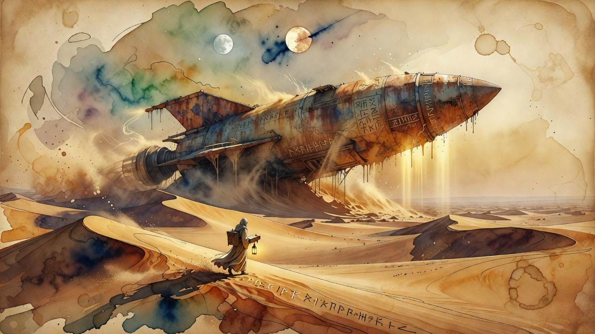

SpaceX seals Cursor
SpaceX officially closes its $60B Cursor acquisition
AI coding startup Cursor has closed its acquisition by SpaceX for $60 billion in stock, completing the deal after SpaceX's blockbuster IPO. The merger hands one of the fastest-growing AI coding tools to Musk's empire, in the largest AI coding acquisition to date. No new primary funding round was announced in the window.